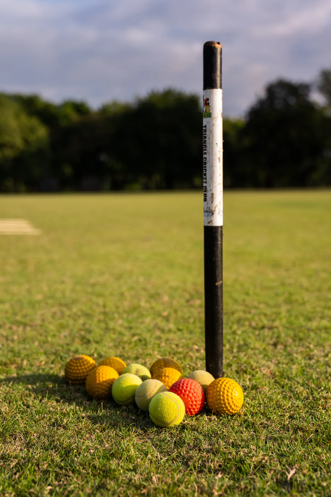
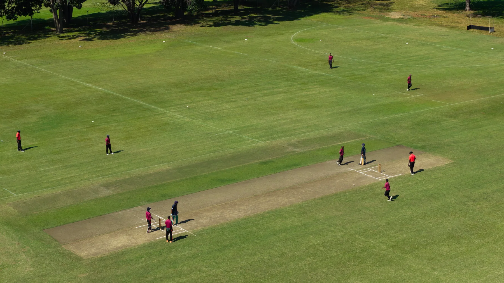
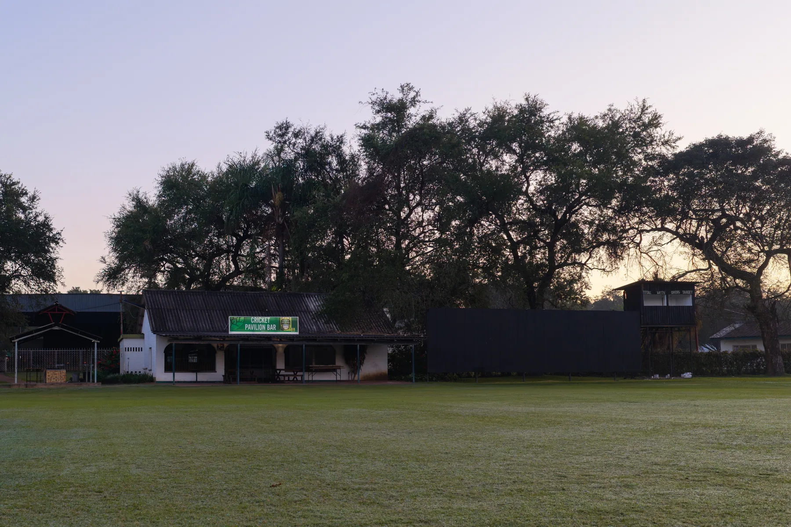

Cricket · NPL-accredited oval
A first-class oval in the heart of the Lowveld.
Accredited by the National Premier League and one of the finest grounds outside Zimbabwe's major cities, the Triangle oval is where touring sides play — a true home of the game in the sugar country.
The Triangle oval
NPL-accredited ground
Where Touring Sides Play.
Accredited by the National Premier League (NPL), the Triangle oval is one of the finest cricket grounds outside the country's major cities — and a working home of the competitive game. Touring sides, representative teams and clubs play here on immaculate turf, alongside a thriving programme of grassroots and women's cricket.
Touring sides, schools and clubs are warmly welcomed for fixtures, festivals, training camps and tournaments — with chalets, catering and the Baobab Restaurant all a short walk from the boundary.
Accredited ground
A National Premier League venue.
Development
Home of junior & women's cricket.
The pitch
A true, well-grassed square.
Tour-ready
Chalets, catering & the Baobab.
In pictures
At the oval.


